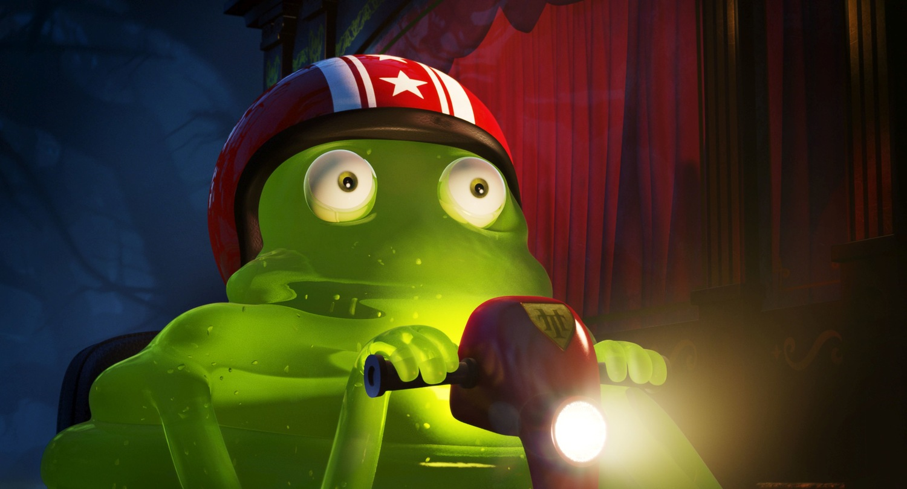

Блоббі (також відомий як Стів) — це яскраво-зелений, желейний монстр, що складається з желеподібних кілець. Він є одним із найкумедніших і найдобріших другорядних персонажів у франшизі «Монстри на канікулах» (відомій також як «Готель Трансильванія»). Вперше з'явившись у першому мультфільмі, він стає одним із найвірніших друзів Дракули.Блоббі (також відомий як Стів) — це яскраво-зелений, желейний монстр, що складається з желеподібних кілець. Він є одним із найкумедніших і найдобріших другорядних персонажів у франшизі «Монстри на канікулах» (відомій також як «Готель Трансильванія»). Вперше з'явившись у першому мультфільмі, він стає одним із найвірніших друзів Дракули.
Монстри на канікулах (2012): Виконує епізодичні ролі, наприклад, рятує Джонатана, коли той стрибає у злитий басейн.Монстри на канікулах 2 (2015): Грає значнішу роль. Намагається танцювати, а на весіллі випадково поглинає маму Джонатана, Лінду.Монстри на канікулах 3: Море кличе (2018): Відпочиває з іншими монстрами на лайнері, де народжує малюка Блоббі та створює слизового собаку.Озвучував цього неймовірного слизового персонажа режисер самої франшизи — Генндій Тартаковський (а в другому фільмі — Джонні Соломон).
Більше інформації про мультфільм можна знайти тут:
Вікіпедія про мультфільм Монстри на канікулах